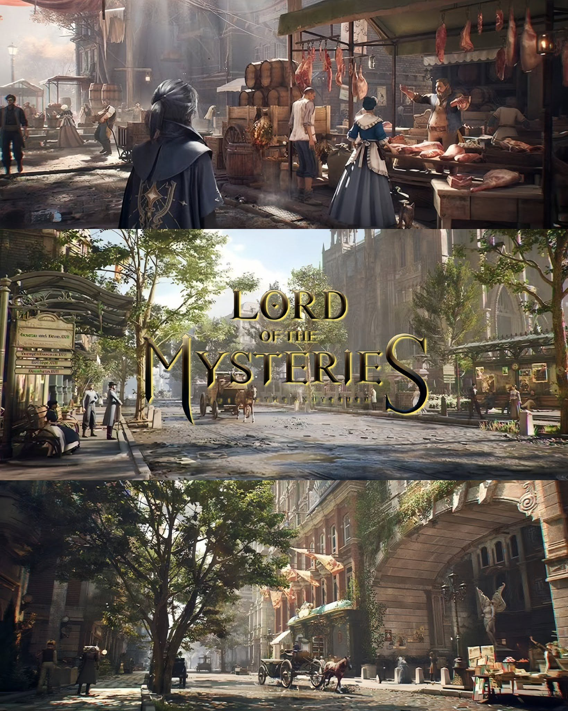

Mi proyecto principal consiste en el desarrollo de un videojuego narrativo inspirado en "Lord of the Mysteries". El juego contará una historia por capítulos donde el jugador tomará decisiones que afectarán al desarrollo de la trama.
El objetivo es combinar narrativa, ambientación misteriosa
y mecánicas sencillas de exploración e interacción.